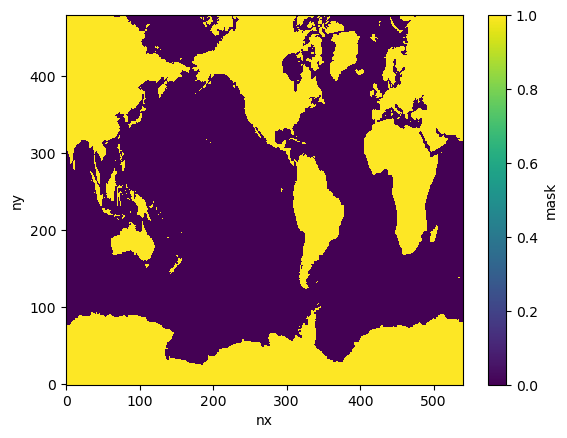
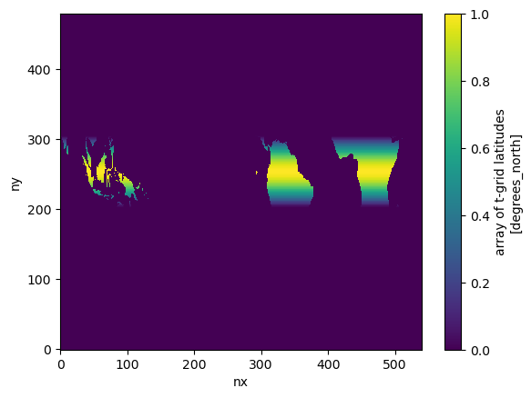
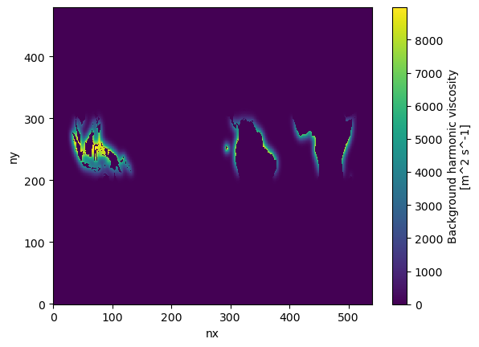

Background harmonic viscosity#
Create a background harmonic viscosity for the tx2_3 grid
%matplotlib inline
import xarray as xr
import numpy as np
import datetime
import matplotlib.pyplot as plt
import warnings
warnings.filterwarnings("ignore")
today = datetime.date.today().strftime("%y%m%d")
print(today)
260427
fname = '../mesh/tx2_3v3_grid.nc'
grd = xr.open_dataset(fname)
grd
<xarray.Dataset> Size: 42MB
Dimensions: (ny: 480, nx: 540, nxp: 541, nyp: 481)
Dimensions without coordinates: ny, nx, nxp, nyp
Data variables: (12/20)
tlon (ny, nx) float64 2MB ...
tlat (ny, nx) float64 2MB ...
ulon (ny, nxp) float64 2MB ...
ulat (ny, nxp) float64 2MB ...
vlon (nyp, nx) float64 2MB ...
vlat (nyp, nx) float64 2MB ...
... ...
tarea (ny, nx) float64 2MB ...
tmask (ny, nx) float64 2MB ...
angle (ny, nx) float64 2MB ...
depth (ny, nx) float64 2MB ...
ar (ny, nx) float64 2MB ...
egs (ny, nx) float64 2MB ...
Attributes:
Description: CESM MOM6 2/3 degree grid
Author: Frank, Fred, Gustavo (gmarques@ucar.edu)
Created: 2026-03-05T14:49:28.971877
type: Glogal 2/3 degree grid filedepth = grd.depth
lath = grd.tlat
dims = depth.dims
# Build mask: 1 over land, 0 over ocean
mask = xr.where(depth > 0.0, 0, 1).astype(float).rename('mask')
mask.plot()
<matplotlib.collections.QuadMesh at 0x14d5c50e4440>

# Taper so the mask smoothly goes to zero within 15° of the equator
mask[259:280,78] = 1.0
fy = (1 - np.minimum(np.abs(lath) / 15, 1) ** 2) ** 2
mask = fy * mask
mask.plot()
<matplotlib.collections.QuadMesh at 0x14d5bff90910>

# Propagate mask values into coastal ocean cells for smooth results.
# Land cells are pinned to their mask value; ocean cells are free to
# receive blended values from neighbors. 1 pass in lonh, 3 passes in lath, 40 times.
KH = mask.copy()
for i in range(40):
KH = np.where(mask>0, mask, KH)
KH = (1/4) * (2*KH + np.roll(KH,1,axis=1) + np.roll(KH,-1,axis=1))
KH = np.where(mask>0, mask, KH)
KH = (1/4) * (2*KH + np.roll(KH,1,axis=0) + np.roll(KH,-1,axis=0))
KH = np.where(mask>0, mask, KH)
KH = (1/4) * (2*KH + np.roll(KH,1,axis=0) + np.roll(KH,-1,axis=0))
KH = np.where(mask>0, mask, KH)
KH = (1/4) * (2*KH + np.roll(KH,1,axis=0) + np.roll(KH,-1,axis=0))
KH = np.where(mask>0, mask, KH)
KH[:,:25] = 0.
KH[:,-25:] = 0.
# Apply final masking and scaling
KH = xr.where(depth > 0.0, KH, np.nan) * 9000.0
ds_out = KH.rename("KH").to_dataset().fillna(0)
ds_out['KH'].attrs = {"units": "m^2 s^-1", "long_name": "Background harmonic viscosity"}
ds_out['KH'].encoding["_FillValue"] = None
ds_out.KH.plot.pcolormesh()
<matplotlib.collections.QuadMesh at 0x14d5bfe60410>

# Save netcdf file
ds_out.attrs['Title'] = '2D background harmonic viscosity field for tx2_3v3'
ds_out.attrs['Author'] = 'Ian Grooms (ian.grooms@colorado.edu) & Gustavo Marques (gmarques@ucar.edu)'
ds_out.attrs['url'] = 'https://github.com/NCAR/tx2_3/background_viscosity'
ds_out.attrs["Date_created"] = today
fname = 'KH_BG_2D_tx2_3v3_{}.nc'.format(today)
ds_out.to_netcdf(fname, format="NETCDF3_64BIT")